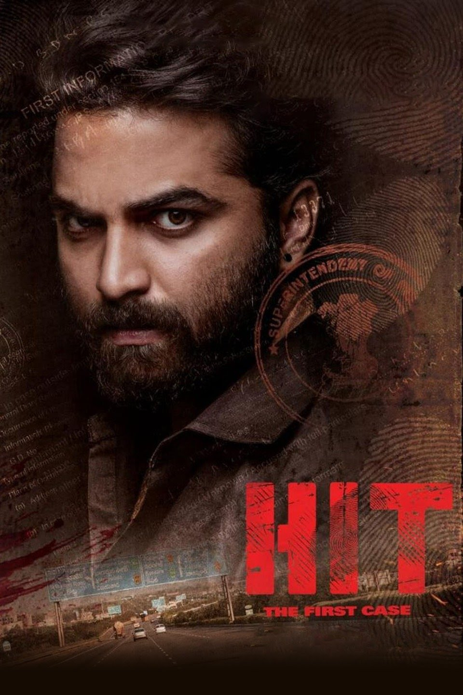

I graduated with my bachelor's degree in Information Technology in the year 2020 from India and immediately went to work for amulti national firm in India. I worked as a system engineer for a year where my responsiblities were to maintain the application and write the code as required by the clients.
Vikram Rudraraju is a cop in the Telangana CID, where he works in the Homicide Intervention Team HIT, and is sharp person, who solves crucial cases with his ability to capture even the smallest of details, thus earning the trust of his senior Viswanath. He is in love with Neha, his colleague and a forensic official. Rohit is Vikram's close friend and his colleague, who accompanies him in most of his cases. Vikram is constantly in an argument with Akshay, another officer, who crosses lines with Vikram. Vikram occasionally suffers from PTSD due to his past experience and refuses to take pills as he believes it slows down his abilities.
